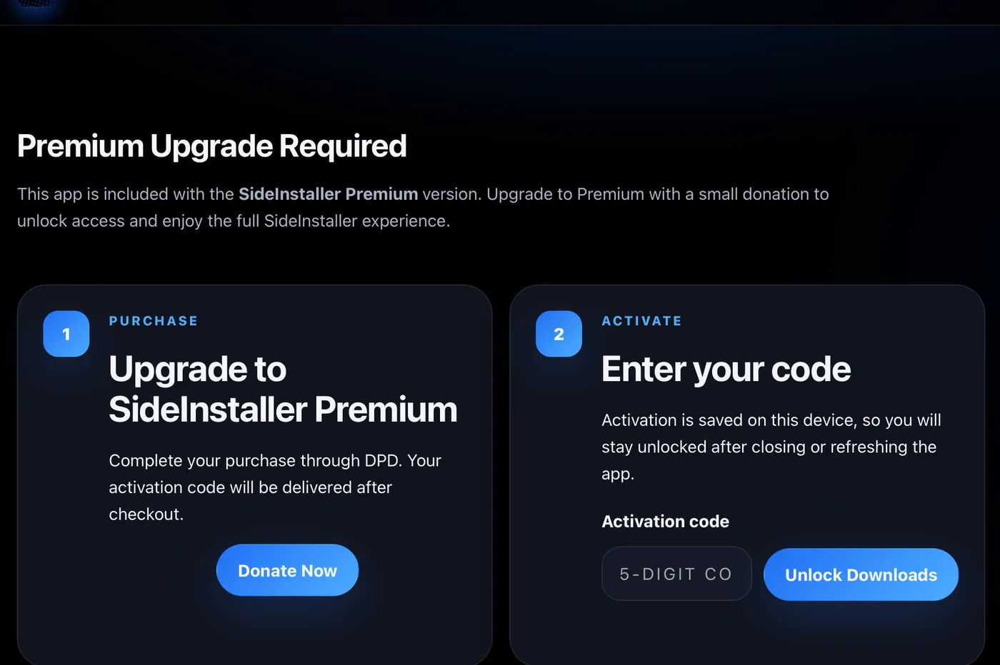
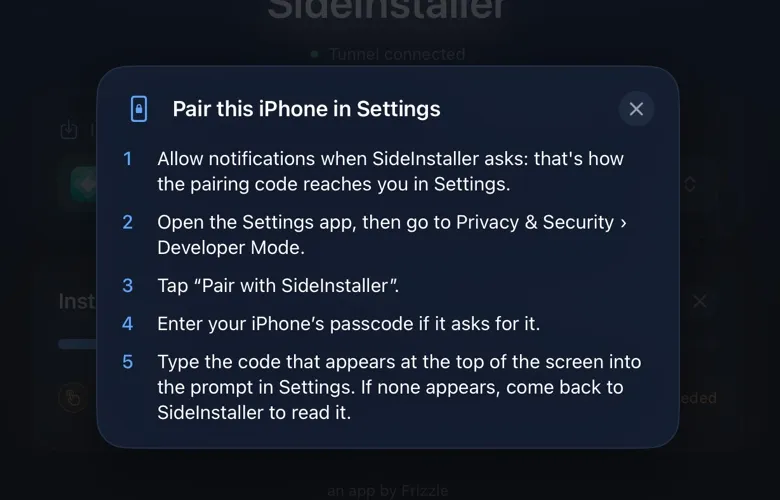
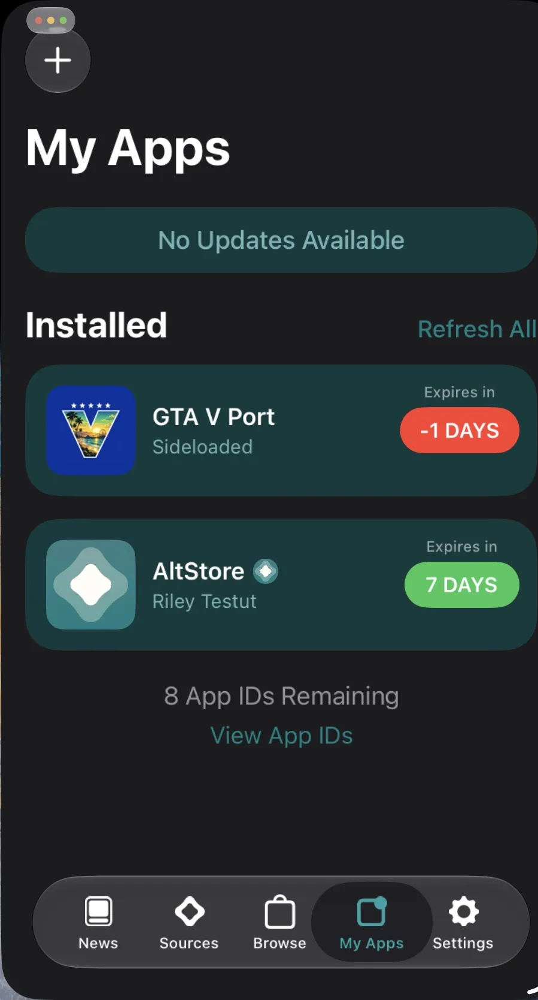
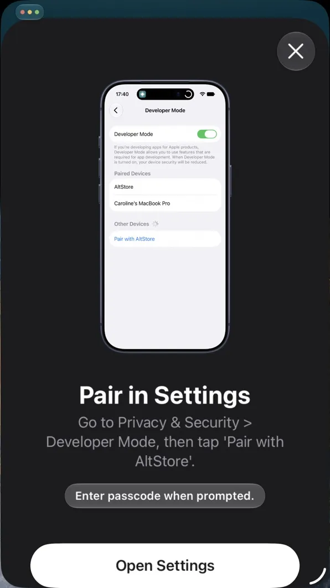
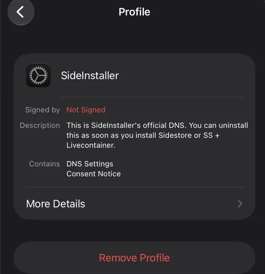
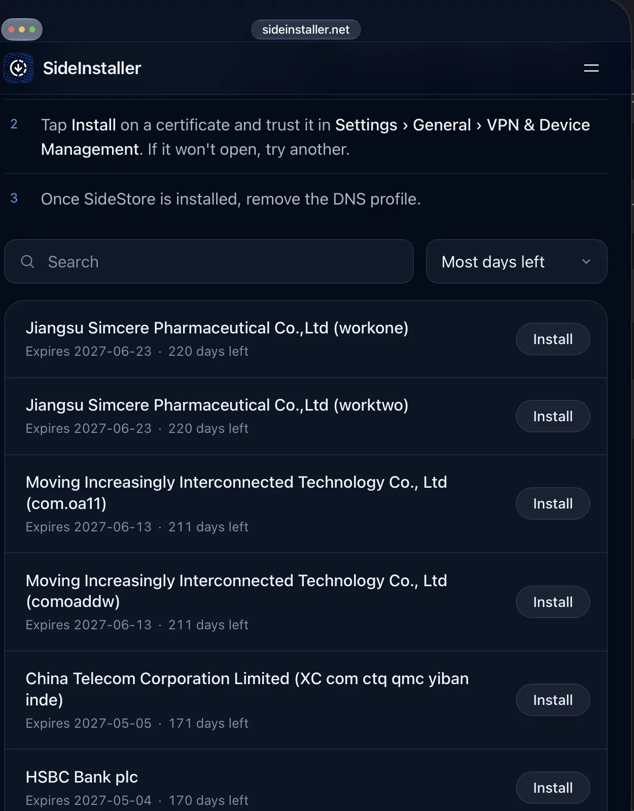
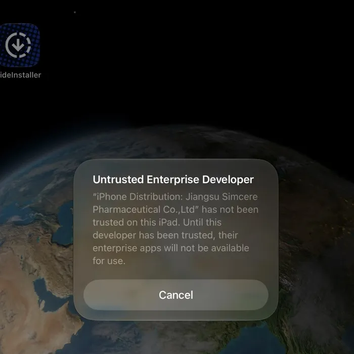

Yes, you can install the community GTA V Port on an iPhone or iPad without a Mac, as long as you're on iOS/iPadOS 27 or later. Install SideInstaller, pair your device with itself in Settings → Privacy & Security → Developer Mode, use it to install AltStore or SideStore, sideload the GTA5Port-iOS IPA, then drop your own game files into the app's folder. With a free Apple Account you must refresh the app every 7 days.
- SideInstaller installed and opened on the iPad, with no computer involved.
- On-device pairing via Developer Mode worked and SideInstaller installed AltStore.
- AltStore picked up the existing GTA V Port install, showing it as expired (−1 days) and AltStore itself signed for 7 days.
- Refreshing the expired GTA V Port and relaunching the game. We'll update this page with a real screenshot once confirmed.
Is this an official GTA V app?
No. Rockstar has never released GTA V for iPhone or iPad. What exists is Five Star Port, an unofficial community project that runs the game natively on the device, with no cloud streaming and no PC connected while you play. It isn't on the App Store; it ships as an .ipa file that you sideload yourself.
According to press coverage, the port pre-translates the game's engine to ARM64 code and draws graphics through a custom Metal renderer. Story mode with saves, free roam, touch controls and Bluetooth controllers are supported, with several graphics presets and adjustable resolution.
Set expectations: reviewers report the phone heats up quickly, textures can look muddy at higher resolutions, and the on-screen buttons cover part of the view. It's an impressive tech demo, not a polished console port.
Device and storage requirements
| Requirement | What you need |
|---|---|
| iOS version (game) | iOS 16 or later for the port itself |
| iOS version (no-Mac setup) | iOS / iPadOS 27 or later for SideInstaller's on-device pairing. Older versions need a computer once. |
| RAM | 6 GB recommended. 4 GB devices may run out of memory. |
| Devices | iPhone 12 Pro, 13 Pro, 14 and newer; recent iPads (we used an iPad) |
| Free storage | About 30 GB (game data is roughly 19–21 GB, plus room to unpack) |
| Accounts | A free Apple Account is enough; no paid developer program needed |
| Network | Wi-Fi for setup and pairing |
The three pieces you need
Most failed installs come from mixing these up. They are three separate things:
The IPA
The GTA V Port app, about 125 MB. It's just the engine and launcher; it contains no game content.
Game files
About 20 GB of game data you supply yourself. Without it, the app opens but has nothing to play.
A sideloader
AltStore or SideStore signs the IPA with your Apple Account so iOS will run it, and refreshes it every 7 days.
1Get the GTA V Port IPA
Download the latest GTA5Port-iOS-vX.Y.Z.ipa from the project's own release channel and save it to the Files app. Use the official channel only; re-uploads on random sites are a common way to ship malware inside sideloaded apps. We don't host or mirror the IPA.

2Install SideInstaller
SideInstaller is a free, open-source app that installs SideStore, LiveContainer or AltStore directly on the device, with no desktop tool. Its official site is sideinstaller.net. When we set it up, the official install page asked for:
- iOS / iPadOS 27 or later, Wi-Fi and Developer Mode turned on
- Open Minis (1.16 or later) and LocalDevVPN, both free on the App Store
- Running SideInstaller's setup command inside Open Minis while LocalDevVPN is connected

During our setup a page on a different domain (app.sideinstaller.com) showed a "Premium Upgrade Required" screen asking for a donation and activation code. SideInstaller is free and open source. Paying for an "unlock" doesn't buy you a valid Apple signing certificate. Go back to the official site instead of paying, and never type your Apple Account password into a web page.

3Pair your iPhone or iPad with itself
This is the step that removes the need for a Mac. Instead of a computer creating a pairing file over USB, iOS 27 can pair with an app on the same device:
- Allow notifications when SideInstaller asks; that's how the pairing code reaches you.
- Open Settings → Privacy & Security → Developer Mode.
- Tap Pair with SideInstaller.
- Enter your device passcode if asked.
- Type the code shown at the top of the screen into the Settings prompt. If it doesn't appear, switch back to SideInstaller to read it.

4Install AltStore or SideStore
With the tunnel connected, open SideInstaller's Install tab and pick a target: SideStore, LiveContainer + SideStore, Madeira, AltStore or a custom IPA. The port's developers recommend SideStore or AltStore. We chose AltStore because the game had originally been installed with it.

Sign in with your Apple Account inside the app when asked. AltStore and SideStore then sign apps with a free 7-day development certificate tied to your account.
5Sideload the GTA V Port IPA
Open AltStore (or SideStore), go to My Apps, tap + and pick the GTA5Port-iOS IPA from Files. When it finishes, GTA V Port appears in the Installed list with an expiry countdown.

When AltStore needs to talk to the device, for example during a refresh, it asks you to pair again: Settings → Privacy & Security → Developer Mode → Pair with AltStore, then enter your passcode.

6Add your game files
- Open GTA V Port once so it creates its own folder.
- In Files, move your game folder or archive to On My iPhone / iPad → GTA V Port.
- Keep the data local, not in iCloud Drive.
- Relaunch the app. It checks the files and can unpack an archive for you.
- Choose Story Mode or Sandbox and press Play.
The port expects a specific build format of the game data; reporting says a normal Steam or installed PC folder won't work. We don't link to, host or explain where to find game data. Only use files you're legally entitled to use.
7Keep the app signed (the 7-day rule)
With a free Apple Account, every sideloaded app is signed for 7 days. When that runs out, iOS refuses to open it. Your game data stays put; the app just won't launch.
- Open AltStore / SideStore every few days and tap Refresh All before the counter hits zero.
- Refreshing re-signs the app in place. Deleting the app deletes its folder, including the ~20 GB of data and your saves.
- Don't uninstall AltStore or SideStore "because the game's already installed". That's exactly how our expired-app problem started: without the sideloader, nothing can renew the signature.
The enterprise certificate route (not recommended)
LocalDevVPN wasn't available in our App Store region, so we tried SideInstaller's fallback: a DNS configuration profile plus a list of legacy enterprise certificates. It worked to get SideInstaller onto the iPad, but you should understand what you're agreeing to.




- Trusting an enterprise developer lets any app signed with that certificate run on your device.
- Apple can revoke these certificates at any time, often without warning.
- Expiry dates on a list prove nothing about current validity.
- If you use it anyway, use it only to bootstrap SideInstaller, then follow the clean-up below.
Clean up afterwards
Once AltStore or SideStore is installed and signed with your own Apple Account:
- Remove the SideInstaller DNS profile. SideInstaller's own instructions say to remove it once SideStore is installed. (Settings → General → VPN, DNS & Device Management.)
- If you trusted an enterprise app, delete the apps signed with it and the trust entry will disappear.
- Leave the Developer App entry for your own Apple Account; that's what keeps AltStore/SideStore and the game signed.

Troubleshooting
| Problem | Likely cause | Fix |
|---|---|---|
| "App is no longer available" | 7-day signature expired | Open AltStore/SideStore and Refresh. If the sideloader is gone, reinstall it via SideInstaller first. |
| "Untrusted Developer" | Certificate not yet trusted | Settings → General → VPN & Device Management → trust your own Apple Account entry. |
| Pairing code never appears | Notifications blocked | Allow notifications for SideInstaller/AltStore, or switch back to the app to read the code. |
| LocalDevVPN not in App Store | Region availability | Check SideInstaller's help page for supported alternatives; treat the enterprise route as a last resort. |
| Enterprise app won't open | Certificate revoked | Don't keep cycling certificates; switch to the pairing route. |
| Game says files missing | Wrong folder, iCloud copy or wrong format | Move data to On My iPhone/iPad → GTA V Port, keep it local, relaunch. |
| Crashes on load | Not enough RAM or storage | Close other apps, free 30 GB+, lower the graphics preset and resolution. |
| "Maximum App IDs" | Free account App ID limit | Remove unused sideloaded apps or wait for IDs to free up. |
Legal and safety notes
- GTA V Port is unofficial and not affiliated with or endorsed by Rockstar Games or Take-Two Interactive. GTA and Grand Theft Auto are their trademarks.
- This guide doesn't host, link to or distribute game data. Respect the game's copyright and only use content you're entitled to.
- Only enter your Apple Account inside AltStore/SideStore, never on a website. Consider a separate Apple Account just for sideloading.
- Sideloading means running apps Apple hasn't reviewed. Download only from official project channels.
- Steps change with every iOS and installer update. If something here doesn't match what you see, trust the official SideInstaller, AltStore and SideStore docs.
FAQ
Can I install GTA V on iPhone without a PC or Mac?
On iOS/iPadOS 27 or later, yes. SideInstaller uses on-device pairing in Developer Mode to install AltStore or SideStore, which then sideload the GTA V Port IPA. On older iOS versions the usual route still needs a computer once.
Is the GTA V iOS port official?
No. It's a community project (Five Star Port). Rockstar hasn't released GTA V for iPhone or iPad and doesn't endorse the port.
How much storage does it need?
Plan for about 30 GB free. The game data alone is roughly 19–21 GB, plus room for unpacking.
Which iPhones can run it?
iOS 16 or later, ideally with 6 GB of RAM or more: iPhone 12 Pro, 13 Pro, 14 and newer, or a recent iPad. 4 GB devices may run out of memory.
Why does GTA V stop opening after seven days?
Apps sideloaded with a free Apple Account are signed for seven days. Open AltStore or SideStore and refresh before the counter runs out.
Do I need a paid Apple Developer account?
No. A free Apple Account works, with the 7-day limit and a small number of App IDs.
Can I refresh without losing the game?
Yes, refreshing re-signs the app in place. Deleting the app deletes its folder, including game data and saves.
SideStore or AltStore?
Both are recommended by the port's developers. SideStore is built to refresh apps without a computer; AltStore is the better pick if your game was originally installed with it, since it recognises its own installs.
Are enterprise certificates safe?
They're risky. They belong to unrelated companies, Apple can revoke them at any time, and trusting one lets unknown apps run on your device. Use the pairing route if you can, and remove the trust afterwards.
Sources
- BGR: Your iPhone can now play GTA V natively (28 Oct 2026)
- iPhones.ru: GTA V on iPhone, the first native port (29 Oct 2026, Russian)
- SideInstaller official site
- AltStore · SideStore
- Screenshots: our own iPad, 15 Nov 2026 (personal details redacted)